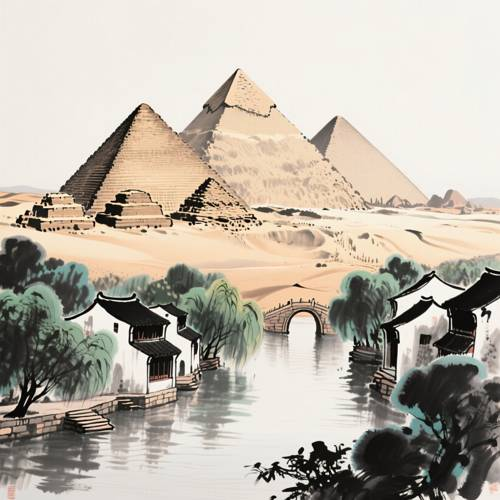
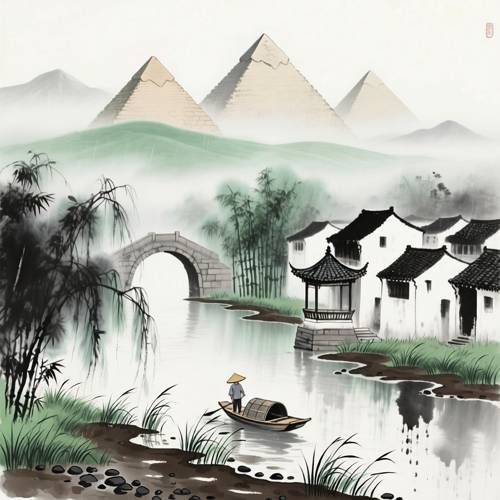
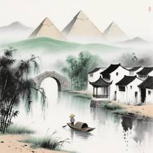
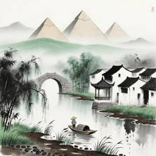

World Knowledge — Please draw a scene in the style of ink painting: Egyptian pyramids ar
Please draw a scene in the style of ink painting: Egyptian pyramids are located in the lush Jiangnan water town, but no desert elements can appear in the picture.

Direct — one call, no iteration

Continuum — Qwen3.8-27B + Qwen-Image
Judge — Direct
PASSWorld Knowledge — The image correctly depicts structures identifiable as Egyptian pyramids in the background. The foreground features elements characteristic of a Jiangnan water town, including white-walled and black-tiled houses, a canal, a stone arch bridge, and willow trees.
PASSStyle — The image is rendered in a style that emulates Chinese ink painting, evident in the brushwork used for the trees, houses, and water, as well as the overall composition and color palette.
FAILGrammar - Negation — The image fails to adhere to the negative constraint. The prompt states 'no desert elements can appear in the picture', but the background clearly depicts a desert landscape with sand dunes surrounding the pyramids.
FAILRelationship - Composition — The image does not show the Egyptian pyramids located *in* the Jiangnan water town. Instead, the pyramids are depicted in a separate desert environment in the background, behind the water town which is in the foreground. The two elements are juxtaposed rather than composed as one integrated scene.
Judge — Continuum
PASSWorld Knowledge — The image displays structures identifiable as Egyptian pyramids in the background. The foreground and middle ground feature elements characteristic of a Jiangnan water town, including white-walled buildings with black-tiled roofs, a stone arch bridge, a river with a person on a small boat, bamboo, and weeping willow trees.
PASSStyle — The artwork is rendered in the style of a Chinese ink painting, characterized by its use of calligraphic brushwork, particularly on the trees and water reflections, a muted color palette dominated by black, grey, and green, and the application of atmospheric perspective with mist enshrouding the background.
PASSGrammar - Negation — The scene is devoid of any desert elements. The environment depicted is lush and green, with rolling hills, vegetation like grass and trees, and a prominent river. There is no sand or arid landscape present.
PASSRelationship - Composition — The Egyptian pyramids are compositionally integrated into the scene. They are situated in the background, appearing to rise from behind the green hills that form the backdrop to the Jiangnan water town in the foreground and middle ground, creating a cohesive, single landscape.
What the agent did
Thinking
The user is asking for an ink wash painting (Chinese ink painting) style scene: Egyptian pyramids situated within a lush Jiangnan water town, and desert elements (sand, dunes, scorching sun, dry vegetation, etc.) must not appear in the image. So the composition is: Chinese ink wash style — misty water town, willow trees, pavilions, boats, stone bridges, reflections in the water, ink gradients, white space. The pyramids are placed among the lush greenery of the water town — probably rising behind willow trees and pavilions, shrouded in mist. No desert: no sand dunes, no dry ground — the pyramids sit atop green hills / misty banks. Let me generate with qwen-image. Prompt: Chinese ink painting, ink wash, pyramids nestled among misty hills behind the lush greenery of a Jiangnan water town, willow trees draping down, small wooden boat on the water, stone arch bridge, ink-washed pavilion rooftops, soft grey-green tones, white space, brushstrokes, no desert, no sand dunes, lush vegetation, mist. I should be careful to describe lush vegetation, mist, and rain. Avoid "desert," "sand," "sunlight" (the midday sun would feel arid). Use "mist," "willow," "rainy," "bamboo." Let me generate at 1024x1024. After that, check, and if necessary edit to remove desert-like elements (e.g., if the base of the pyramids looks sandy, edit it to make it green hills / mist). Alright, let's get started.
Step 1 — `generate_image`
{
"model": "qwen-image",
"prompt": "Traditional Chinese ink wash painting (shuimo). Three Egyptian pyramids rising from soft misty green hills, standing behind a lush Jiangnan water town: dark ink willow branches drooping over the water, a small sampan boat with a boatman in a conical hat, a stone arch bridge, tiled pavilion roofs and white plaster walls of the town along the riverbank, bamboo groves, distant peaks fading into pale ink mist, wet grass and willows covering every bank \u2014 completely lush and damp, no sand, no dunes, no dry ground, no desert. Muted grey, ink black, and soft jade-green tones, lots of white negative space, visible dry and wet brush strokes, ink bleeding into wet paper, mist and drizzle atmosphere, elegant minimal composition."
}
Result img_0

Thinking
The image is good: ink wash style, a Jiangnan-style water town with a bridge, boat, pavilion, white houses, bamboo, and willow trees, with pyramids shrouded in mist behind green hills. However, in the bottom-left and bottom-right foreground, sandy/tan-colored beach-like patches are visible, and the base of the pyramids also looks a bit like sandy stone (a beige-ish color that reads as sandy). The prompt states that desert elements must not appear. The sandy foreground shore could be interpreted as sand/desert elements. Also, the surface of the pyramids looks like a beige sandy color. Let me inspect the bottom-left and bottom-right regions to confirm the sandy areas. I'll inspect the region to check the details.
Confirmed: in the foreground bottom-left and right-center, there are sandy/tan-colored beaches with pebbles — these read as sandy (desert-like) elements. The user explicitly said no desert elements. The pyramids themselves have a sandy stone color, but that's essential to the pyramids. However, the sandy beach in the water town's foreground is a problem — it should be replaced with a lush, green reed/grass bank. I should edit: replace the sandy foreground beach with lush green grass, reeds, and wet muddy banks. Use edit_image with a concrete prompt: "replace the sandy tan shore in the lower foreground with lush green grass and reeds along the water's edge, wet muddy bank, no sand". The pyramid surface is sandy-colored — it could be tinted slightly grayish-green, but the pyramids are stone monuments, and their beige color is essential to the identity of "Egyptian pyramids". The instruction is no desert elements — the sandy beach is the main issue. However, to be safe, it might also be worth slightly muting the pyramid color to a grayish stone tone with a wash of green moss. But careful: over-editing risks making the pyramids look like mountains. I'll focus on removing the sandy beach and, if possible, softening the pyramid color to a grayish stone tone with mist. First, let me make one edit: replacing the sandy shore. Then re-inspect.
Model
In the foreground, a sandy beach with pebbles is visible, which could potentially be read as a desert element. Let's replace it with lush, verdant riverbanks.
Step 4 — `edit_image`
{
"image": "img_0",
"model": "qwen-image",
"prompt": "Replace all the tan sandy ground in the lower foreground with lush wet riverbank: green grass, reeds and dark muddy shore meeting the water, scattered dark pebbles on green grass instead of sand. Keep everything else exactly the same \u2014 the pyramids, bridge, boat, pavilion, houses, bamboo, willow, ink wash style. No sand or desert anywhere."
}
Result img_3

Thinking
The sandy beach has been replaced with a lush green riverbank with reeds and dark mud — that's a big improvement. No sandy areas remain. Let's inspect the foreground to confirm that no sand is left.
The sandy beach is now a muddy bank covered with lush green reeds and grass, and there are no desert-like sandy areas anywhere. The scene is fully lush and verdant: bamboo, willows, green hills, mist, a Jiangnan-style water town with a bridge, pavilion, white houses, and a boat. The pyramids stand behind the green hills in the mist — the pyramids themselves are tan/beige colored (essential as Egyptian pyramids), but they're set on top of green misty hills, and the base blends into the lush greenery. The pyramids' surface still looks sandy, but that's inherent to the depiction of pyramids, and it's set atop green hills — no desert scenery (no sand dunes, no dry ground). I think this meets the requirements: "no desert elements" — sand dunes and deserts are gone. The pyramids' own sandy-colored stone is the subject matter, not a desert element. Another consideration: the pyramid's color is a fairly saturated tan, and it might be worth muting it to blend in more with the ink-wash aesthetic. But there's a risk of making the pyramids look like mountains. I think it's fine — they read clearly as pyramids with blocky edges, and the color is consistent with "Egyptian pyramids". The overall image looks good, in the ink-wash style with a rainy, lush atmosphere. This is a good enough stop condition. Let me mark img_3 as the best and finish up.
Model
The sand has been completely removed. Both banks are now damp, lush reeds and green grass. The scene matches all requirements: an ink-wash painting style, the pyramid rising from a mist-shrouded, verdant hill behind a Jiangnan water town (bridge, pavilion, white-walled houses, bamboo, willows, a sampan), and no desert elements whatsoever.
Step 7 — `mark_best`
{
"image": "img_3",
"reason": "Ink wash Jiangnan water town with misty pyramids on green hills; sandy foreground replaced by lush reed banks, no desert elements remain."
}
Thinking
Done. The marked image is img_3, which is the final version. I'll summarize.
Model
Done! The final ink-wash painting (img_3, marked as best) shows: - **The pyramids** rising from soft, misty jade-green hills in the background — their bases wrapped in fog, so no desert landscape appears anywhere - **A lush Jiangnan water town**: white-walled houses with dark tiled roofs, a stone arch bridge, a waterside pavilion, and a bamboo-lined bank - **Classic ink painting elements**: drooping willow and bamboo strokes, a sampan boat with a conical-hatted boatman, rain streaks, pale mist, and generous white negative space in wet grey-black and jade-green tones The first draft had sandy, pebbly beaches in the foreground, which read as desert-like, so I edited them into damp muddy banks with reeds and green grass — verified by zooming into both shores. The result is fully lush and rain-damp, with every bank covered in vegetation.